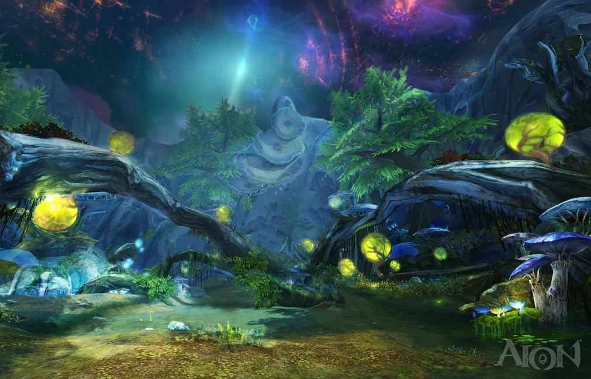

Atreia teremtése
Atreia teremtése az AION univerzumának egyik
legősibb és legrejtélyesebb története, mely a kozmosz kezdeti
káoszából alakult ki. Az ősi idők sötétségében még semmi nem volt
meghatározott, de egy hatalmas, isteni erő ébredt fel, hogy
rendet teremtsen
a végtelen káoszban.
Az egyik legfontosabb pillanat az volt, amikor
Aion Isten megjelent, és elhatározta, hogy
megteremti Atreiát – egy olyan világot, ahol az
isteni erők, a mágia és a természet egyaránt megmutatkozhatnak.
Ebben az időszakban a kozmikus káosz még
uralkodott, de a teremtés igénye fokozatosan szabályokat és
struktúrát adott a végtelen térnek.

Az alkotás folyamata több lépésben zajlott:
-
Primordiális káosz: A kezdeti állapot, ahol a
rendezetlenség mindenhol jelen volt.
-
Az isteni szikra: Az a pillanat, amikor Aion
Isten eldöntötte, hogy a káosz felett uralmat akar gyakorolni, és
megteremti a rendet.
-
Kozmikus harmónia: Az erők összehangolódása,
melynek köszönhetően a világ megkapta alapvető törvényeit.
Ezzel együtt az alkotás nemcsak a fizikai világ megjelenését
jelentette, hanem egy misztikus energiamezőt is, amely később a
mágia forrásaként hatott az egész univerzumban. A
fény és a sötétség ellentéte
egyensúlyba került, lehetővé téve az élet megjelenését a puszta
káoszból.
Az események további részletei:
-
Az isteni parancs: Az univerzum teremtése során
meghatározó szerepet játszott az, hogy Aion Isten megfogalmazta az
alapelveket és törvényeket, melyekre a világ épült.
-
A szent tűz: Egy különleges energiaforrás, amely
életet és megújulást hozott a sötétség mélyéből.
-
A spirális idő: A teremtés egy nem lineáris
folyamat volt, melyben minden ciklus új kezdetet és véget
jelentett egyszerre.
A mítoszok szerint az Atreia teremtése nem csupán egy egyszeri
esemény volt, hanem egy örök körfolyamat, melyben a rend és káosz
között egyensúly uralkodik. Minden egyes lépés újabb misztériumot
rejt, és az isteni szikra ma is inspirációt nyújt azoknak, akik a
kozmosz rejtélyeit keresik.
Fedezd fel Te is az Atreia teremtésének titokzatos
történetét, és merülj el a legendákban, melyek az örök élet és a
végtelen lehetőségek forrását képezik!